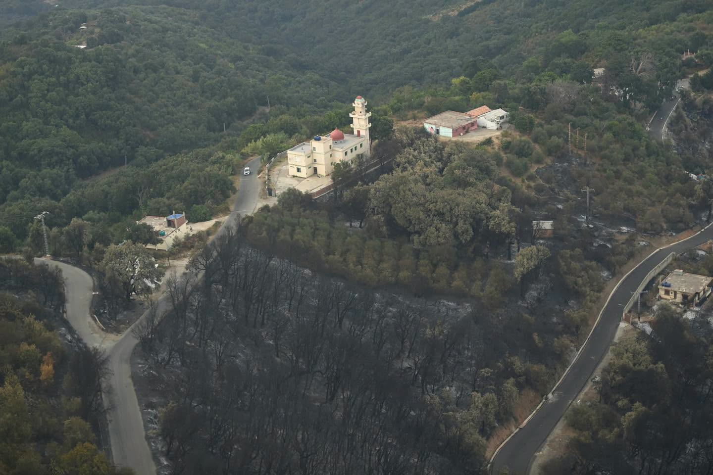

يتقدم فوج القدس لقدماء الكشافة الإسلامية بسيدي داود بدعوة جميع المحسنين بجمع التبرعات لإغاثة إخواننا المنكوبين في ، وعليه، يتم جمع تبرعاتكم ومسعداتكم في المحل مطعم النخيل بمفترق الطرق (04 طرق) الولايات المتضررة جراء الحرائق التي مست البلاد.
